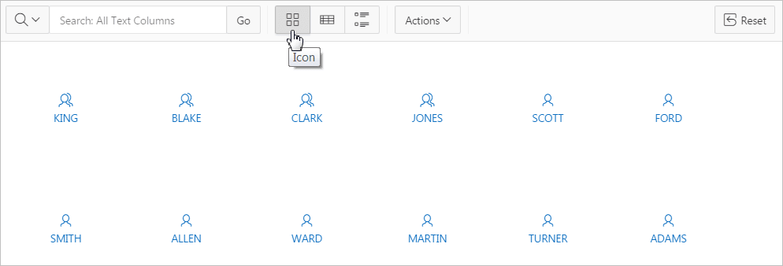
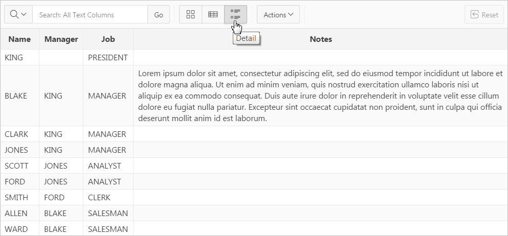

8.8.7 Managing Interactive Grid Attributes
Edit interactive grid Attributes to control how an interactive grid works.
- Editing Interactive Grid Attributes
Edit interactive grid Attributes in Page Designer. - Making an Existing Interactive Grid Editable
Make an existing interactive grid editable by configuring attributes in the Edit group. - Controlling Interactive Grid Pagination
Pagination provides the end user with information about the number of rows displayed and the current position within the result set. - Customizing the Interactive Grid Toolbar
Configure what controls display on the interactive grid toolbar. - Enabling Users to Save Interactive Grid Public Reports
Enable users to save an interactive grid as a Public report. - Enabling Flashback and Charts
Enable users to utilize flashback queries and define a chart in an interactive grid. - Configuring Interactive Grid Download Formats
Enable users to download an interactive grid to specified download formats. - Enabling Icon View in an Interactive Grid
Learn how to enable Icon View in an interactive grid. - Enabling Detail View in an Interactive Grid
Learn how to enable Detail View in an interactive grid.
Parent topic: Managing Interactive Grids
8.8.7.1 Editing Interactive Grid Attributes
Edit interactive grid Attributes in Page Designer.
To edit interactive grid Attributes:
Parent topic: Managing Interactive Grid Attributes
8.8.7.2 Making an Existing Interactive Grid Editable
Make an existing interactive grid editable by configuring attributes in the Edit group.
To make an interactive grid editable:
Parent topic: Managing Interactive Grid Attributes
8.8.7.3 Controlling Interactive Grid Pagination
Pagination provides the end user with information about the number of rows displayed and the current position within the result set.
To change interactive grid pagination:
Parent topic: Managing Interactive Grid Attributes
8.8.7.4 Customizing the Interactive Grid Toolbar
Configure what controls display on the interactive grid toolbar.
All interactive grids include a toolbar at the top of the page. Developers can customize what controls display on the toolbar or remove it.
Note:
Some of the options described in this procedure only apply if the interactive grid is editable. See Making an Existing Interactive Grid Editable.
To customize the interactive grid toolbar:
Parent topic: Managing Interactive Grid Attributes
8.8.7.5 Enabling Users to Save Interactive Grid Public Reports
Enable users to save an interactive grid as a Public report.
Users can save an interactive grid as a Public report if the report developer enables that capability. Public reports display in a select list of available reports on the toolbar and are available to all users. However, only the user who creates a Public report can save, rename, or delete it. You can further restrict who can save Public reports by selecting an authorization scheme.
Tip:
The Save Public Report attribute is only available to authenticated users and can be further restricted by the defined Authorization scheme. See Establishing User Identity Through Authentication.
To enable end users to save Public reports:
Parent topic: Managing Interactive Grid Attributes
8.8.7.6 Enabling Flashback and Charts
Enable users to utilize flashback queries and define a chart in an interactive grid.
To enable Flashback or Define Chart View:
Parent topic: Managing Interactive Grid Attributes
8.8.7.7 Configuring Interactive Grid Download Formats
Enable users to download an interactive grid to specified download formats.
To configure interactive grid download formats:
Parent topic: Managing Interactive Grid Attributes
8.8.7.8 Enabling Icon View in an Interactive Grid
Learn how to enable Icon View in an interactive grid.
Interactive grids support different views of data. By default, interactive grids display data in a Grid view. Developers can optionally display data as icons. Enabling Icon view adds an Icon button to the select view button group.
- About Icon View in an Interactive Grid
Learn about interactive grid Icon View. - Enabling Icon View in an Interactive Grid
Learn how to enable Icon View in an interactive grid. - Adding a Custom Icon View Link to an Interactive Grid
Learn how to add custom Icon View link in an interactive grid.
Parent topic: Managing Interactive Grid Attributes
8.8.7.8.1 About Icon View in an Interactive Grid
Learn about interactive grid Icon View.
Interactive grids support different views of data. Users can switch between these views by clicking the buttons in the select view button group. The following illustration shows an interactive grid with Icon view enabled and the Icon button selected. To enable Icon view, you must identify the columns used to identify the icon, the label, and the target (that is, the link).

Description of the illustration ig_icon_view.png
Viewing a Working Example of Icon View
To see a working example of this Icon view, install the sample application, Sample Interactive Grids and review Reporting, Icon and Detail Views .
Parent topic: Enabling Icon View in an Interactive Grid
8.8.7.8.2 Enabling Icon View in an Interactive Grid
Learn how to enable Icon View in an interactive grid.
An important requirement of icon view is that each item in the view must have the same width and height and the item content must not overflow. The width and height are set with CSS rules on elements with a class of a-IconList-item.
To add an Icon view to an interactive grid:
Parent topic: Enabling Icon View in an Interactive Grid
8.8.7.8.3 Adding a Custom Icon View Link to an Interactive Grid
Learn how to add custom Icon View link in an interactive grid.
A custom Icon View link provides greater flexibility in defining the content of the Icon View, including the ability to utilize more than one column.
To add custom Icon View link to an interactive grid:
Parent topic: Enabling Icon View in an Interactive Grid
8.8.7.9 Enabling Detail View in an Interactive Grid
Learn how to enable Detail View in an interactive grid.
Interactive grids support different views of data. By default, interactive grids display data in a Grid view. Developers can optionally display data as in a Detail view. Enabling Detail view adds an Detail button to the select view button group.
- About Detail View in an Interactive Grid
Learn about interactive grid Detail View. - Adding a Detail View to an Interactive Grid
Learn how to enable Detail View in an interactive grid.
Parent topic: Managing Interactive Grid Attributes
8.8.7.9.1 About Detail View in an Interactive Grid
Learn about interactive grid Detail View.
Interactive grids support different views of data. Users can switch between these views by clicking the buttons in the select view button group. The following illustration shows an interactive grid with Detail view enabled and the Detail button selected. Detail view displays column values using developer defined HTML markup as shown in the following illustration.

Description of the illustration ig_detail_view.png
Parent topic: Enabling Detail View in an Interactive Grid
8.8.7.9.2 Adding a Detail View to an Interactive Grid
Learn how to enable Detail View in an interactive grid.
To add a Detail view to an interactive grid:
Parent topic: Enabling Detail View in an Interactive Grid